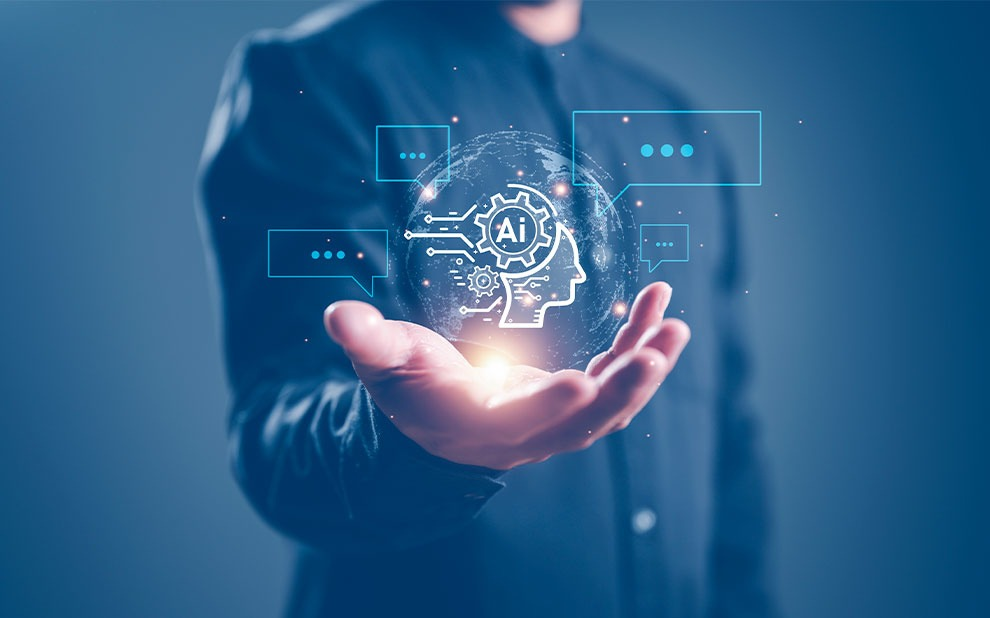

A inteligência artificial (IA) desempenha um papel crucial na produção e distribuição de alimentos, proporcionando benefícios significativos para a indústria
alimentícia e para os consumidores em geral. Aqui está um resumo da importância do uso da IA nesse setor:
1 - Aumento da eficiência na produção: A IA pode ser aplicada em várias etapas do processo de produção de alimentos para otimizar a eficiência. Por exemplo,
algoritmos de IA podem ajudar a monitorar e controlar as condições de cultivo em fazendas, identificar doenças nas plantas, otimizar a irrigação e o uso de
fertilizantes, resultando em maior produtividade e menor desperdício.
2 - Melhoria da segurança alimentar: A IA desempenha um papel fundamental na detecção precoce de contaminação e deterioração de alimentos. Algoritmos de
aprendizado de máquina podem analisar grandes quantidades de dados para identificar padrões e sinais de alerta, ajudando a prevenir surtos de doenças transmitidas
por alimentos e minimizando o risco para os consumidores.
3 - Otimização da cadeia de suprimentos: A IA pode ser usada para aprimorar a gestão da cadeia de suprimentos de alimentos, desde a colheita até a entrega aos consumidores.
Algoritmos de IA podem prever a demanda, otimizar rotas de entrega, monitorar a qualidade dos produtos durante o transporte e ajudar na tomada de decisões estratégicas para
minimizar custos e reduzir o tempo de entrega.
4 - Personalização e atendimento ao cliente: A IA pode ser empregada para entender as preferências dos consumidores e personalizar a produção e distribuição de alimentos de
acordo com suas necessidades individuais. Por meio de análises avançadas, a IA pode recomendar produtos específicos, fornecer informações nutricionais detalhadas e criar experiências
personalizadas de compra, melhorando a satisfação do cliente.
5 - Redução do desperdício de alimentos: A IA pode ajudar a reduzir o desperdício de alimentos ao longo de toda a cadeia de suprimentos. Algoritmos de previsão de demanda podem estimar
com mais precisão a quantidade de alimentos necessária, evitando a produção excessiva. Além disso, a IA pode identificar produtos próximos ao vencimento e sugerir ações adequadas, como
promoções ou doações, para evitar o descarte desnecessário.

Confira em (Saiba mais) e aprenda um pouco mais sobre IA - Inteligência Artificial.